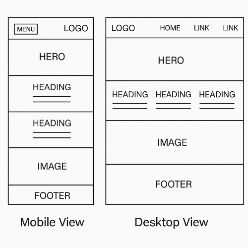

This name represents a platform dedicated to football (soccer) in Uganda, focusing on promoting local
talents, clubs, and football activities across the country.
Optional domain availability: ugandanfootball.org
Site Purpose
The purpose of this site is to promote football talents in Uganda by showcasing players, clubs, news, and
events. The site will provide a hub for football enthusiasts, scouts, and clubs to discover and connect with
emerging Ugandan football talent.
Scenarios
How can I discover rising football players in Uganda?
Where can I find information about upcoming football events and matches in Uganda?
Color Schema
Primary #006400
Accent #ffd700
Primary Color (#006400): Used for headings, navigation bar, and buttons.
Accent Color (#ffd700): Used for highlights, links, and call-to-action elements.
Background (#f4f4f4): Used for the main page background.
Typography
Montserrat: Used for headings and navigation (imported from Google Fonts).
Roboto: Used for body text and paragraphs (imported from Google Fonts).
Sample Heading (Montserrat)
Sample body text (Roboto)
Wireframe

Mobile View
Desktop View
(Replace the wireframe image above with your own sketch or diagram if desired.)
Suggestion Room
Have ideas or feedback for the Ugandan Football site? Please share your suggestions for features, content,
or improvements that could help promote football talent in Uganda more effectively.
What additional information would you like to see about players or clubs?
Are there any interactive features (e.g., forums, polls, or match predictions) you would find valuable?
How can we make the site more useful for scouts, coaches, or fans?